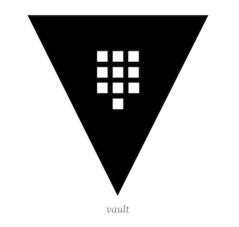
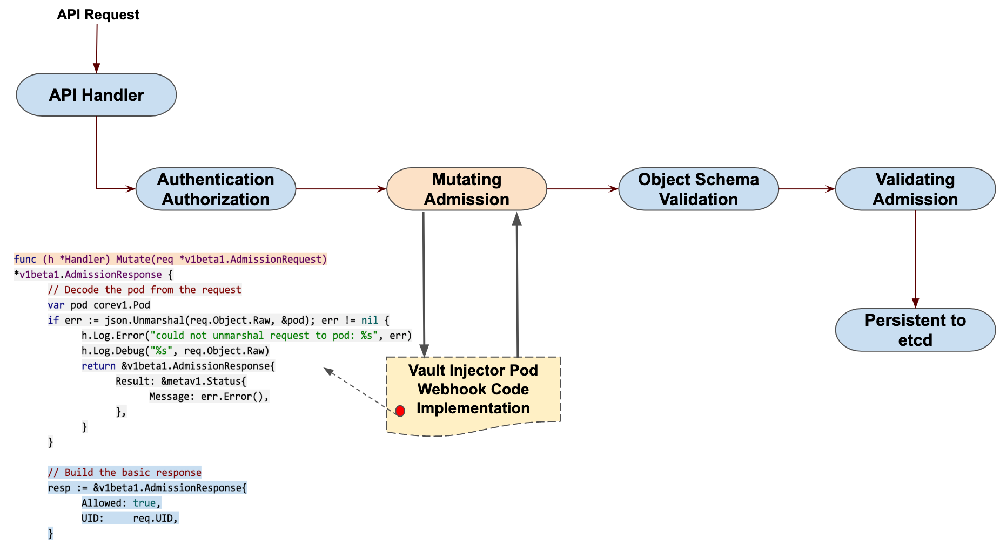

L0 在 Kubernetes 上部署 Vault
很多时候我们可能都是直接将应用程序的密码或者 API Token 之类的私密信息直接暴露在源代码中的，显然直接暴露这些私密信息不是一个好的方式。在 Kubernetes 系统中提供了一个 Secret 对象来存储私密的数据，但是也只是简单的做了一次 Base64 编码而已，虽然比直接暴露要好点了，但是如果是一些安全性要求非常高的应用直接用 Secret 显然也还是不够的。本文就将来介绍如何使用 HashiCorp Vault 在 Kubernetes 集群中进行秘钥管理。
Vault 介绍
Vault 是用于处理和加密整个基础架构秘钥的中心管理服务。Vault 通过 secret 引擎管理所有的秘钥，Vault 有一套 secret引擎可以使用，一般情况为了使用简单，我们会使用 kv（键值）secret 引擎来进行管理。

使用 Vault 有很多的优点：
- 秘钥管理服务简单的说，可以看做后端领域的
Password。首先它会保证秘钥存储安全，不管谁拿到秘钥管理服务的落地数据文件，在没有秘钥的情况下还是不能解密的。 - 从
Vault获取之前配置的密码、秘钥等关键数据，会需要由管理员分配Token，对这些分配的Token，管理员可以制定包括过期、撤销、更新和权限管理等等各种安全策略 Vault的安全级别可以提供面向公网开放的服务，所以可以为开发环境提供一个开发人员的Vault，在家或者异地开发也可以很方便- 管理员可以随时通过
Vault更新各个数据服务的安全密码或密钥，也可以随时收回或修改特定Token的权限。这在Rolling out更新时很有用 - 使用
Vault会强制代码通过Vault接口来获取各种数据连接密码或秘钥。避免开发人员无意获得和在代码中使用秘钥密码。而且因为Vault 的管理方式允许，虽然代码只有一份，我们还是可以将不同开发阶段的Vault分别管理。甚至可以做到生产环境中只有1人有Vault管理权限，也不会觉得维护起来很吃力 - 所有秘钥存取和修改都有日志记录。可以作为事后证据成为被入侵的线索
- 数据库和
API秘钥不再散落在代码各处
安装
同样为了方便我们这里还是使用 Helm3 在 Kubernetes 集群上安装 Vault，对应的环境版本如下所示：
$ helm version
version.BuildInfo{Version:"v3.0.3", GitCommit:"ac925eb7279f4a6955df663a0128044a8a6b7593", GitTreeState:"clean", GoVersion:"go1.13.7"}
$ kubectl version
Client Version: version.Info{Major:"1", Minor:"15", GitVersion:"v1.15.1", GitCommit:"4485c6f18cee9a5d3c3b4e523bd27972b1b53892", GitTreeState:"clean", BuildDate:"2019-07-18T09:18:22Z", GoVersion:"go1.12.5", Compiler:"gc", Platform:"darwin/amd64"}
Server Version: version.Info{Major:"1", Minor:"15", GitVersion:"v1.15.5", GitCommit:"20c265fef0741dd71a66480e35bd69f18351daea", GitTreeState:"clean", BuildDate:"2019-10-15T19:07:57Z", GoVersion:"go1.12.10", Compiler:"gc", Platform:"linux/amd64"}
这里直接使用 Vault官方提供的 chart 包安装即可：https://github.com/hashicorp/vault-helm，改包没有上传到 chart仓库中，所以我们可以直接 clone 代码到 Helm3 所在的客户端直接安装，当然也可以直接通过指定 Release 的压缩包也可以，使用如下命令安装：
$ wget https://github.com/hashicorp/vault-helm/archive/v0.3.3.tar.gz
$ helm install vault --namespace kube-system --set "server.dev.enabled=true" v0.3.3.tar.gz
NAME: vault
LAST DEPLOYED: Wed Feb 19 16:03:02 2020
NAMESPACE: kube-system
STATUS: deployed
REVISION: 1
TEST SUITE: None
NOTES:
Thank you for installing HashiCorp Vault!
Now that you have deployed Vault, you should look over the docs on using
Vault with Kubernetes available here:
https://www.vaultproject.io/docs/
Your release is named vault. To learn more about the release, try:
$ helm status vault
$ helm get vault
上面的命令就会在 kube-system 命名空间下面安装一个名为 vault 的 Helm release：
$ helm ls -n kube-system | grep vault
vault kube-system 1 2020-02-19 16:03:02.951868 +0800 CST deployed vault-0.3.3
$ kubectl get pods -n kube-system | grep vault
vault-0 1/1 Running 0 25m
vault-agent-injector-5f8c857c9f-5szkv 1/1 Running 0 25m
看到上面的两个 Vault 相关的 Pod 运行成功则证明已经安装成功了，所以安装是很方便的，接下来重点看下如何使用。
使用
假如现在我们有一个需求是希望 Vault 将数据库的用户名和密码存储在应用的 internal/database/config 路径下面，首先要创建 secret 需要线开启 kv secret 引擎，并将用户名和密码放在指定的路径中。
进入 vault-0 容器的命令行交互终端：
$ kubectl exec -it vault-0 /bin/sh -n kube-system
/ $
在 internal 路径下面开启 kv-v2 secrets 引擎：
/ $ vault secrets enable -path=internal kv-v2
Success! Enabled the kv-v2 secrets engine at: internal/
然后在 internal/exampleapp/config 路径下面添加一个用户名和密码的秘钥：
/ $ vault kv put internal/database/config username="db-readonly-username" password="db-secret-password"
Key Value
--- -----
created_time 2020-02-19T12:11:39.8379346Z
deletion_time n/a
destroyed false
version 1
创建完成后可以通过如下命令校验上面创建的 secret：
/ $ vault kv get internal/database/config
====== Metadata ======
Key Value
--- -----
created_time 2020-02-19T12:11:39.8379346Z
deletion_time n/a
destroyed false
version 1
====== Data ======
Key Value
--- -----
password db-secret-password
username db-readonly-username
这样我们就将用户名和密码信息存储在了 Vault 中，Vault提供了一个 Kubernetes 认证的方法可以让客户端通过使用 Kubernetes ServiceAccount 进行身份认证。
开启 Kubernetes 认证方式：
/ $ vault auth enable kubernetes
Success! Enabled kubernetes auth method at: kubernetes/
Vault会接受来自于 Kubernetes 集群中的任何客户端的服务 Token。
在身份验证的时候，Vault 通过配置的 Kubernetes地址来验证 ServiceAccount 的 Token 信息。
通过 ServiceAccount 的 Token、Kubernetes地址和 CA证书信息配置 Kubernetes 认证方式：
$ vault write auth/kubernetes/config \
token_reviewer_jx="$(cat /var/run/secrets/kubernetes.io/serviceaccount/token)" \
kubernetes_host="https://$KUBERNETES_PORT_443_TCP_ADDR:443" \
kubernetes_ca_cert=@/var/run/secrets/kubernetes.io/serviceaccount/ca.crt
Success! Data written to: auth/kubernetes/config
- 其中
token_reviewer_jx和kubernetes_ca_cert都是Kubernetes默认注入到Pod中的， - 而环境变量
KUBERNETES_PORT_443_TCP_ADDR也是内置的表示Kubernetes APIServer的内网地址。 - 为了让客户端读取上一步定义在
internal/database/config路径下面的secret数据，还需要为该路径授予read的权限。
这里我们创建一个名为 internal-app 的策略名称，该策略会启用对路径 internal/database/config 中的 secret 的读取权限：
/ $ vault policy write internal-app - <<EOH
path "internal/data/database/config" {
capabilities = ["read"]
}
EOH
Success! Uploaded policy: internal-app
然后创建一个名为 internal-app 的 Kubernetes认证角色：
/$ vault write auth/kubernetes/role/internal-app \
bound_service_account_names=internal-app \
bound_service_account_namespaces=default \
policies=internal-app \
ttl=72h
Success! Data written to: auth/kubernetes/role/internal-app
该角色将 Kubernetes default 命名空间下面的名为 internal-app 的 ServiceAccount 与 Vault 的 internal-app 策略连接在了一起，认证后返回的 Token有 72小时的有效期。
最后直接退出 vault-0：
/ $ exit
到这里 Vault 相关的准备工作已经完成了，接下来就是如何在 Kubernetes 中来读取上面我们的 Secret 数据。
上面我们在 default 命名空间下面定义了一个名为 internal-app 的 ServiceAccount，该对象还不存在，首先先创建：(vault-sa.yaml)
apiVersion: v1
kind: ServiceAccount
metadata:
name: internal-app # 需要和上面的 bound_service_account_names 一致
namespace: default # 需要和上面的 bound_service_account_namespaces 一致
直接创建即可：
$ kubectl apply -f vault-sa.yaml
serviceaccount/internal-app created
$ kubectl get sa
NAME SECRETS AGE
internal-app 1 174m
然后在我们的应用中使用上面创建的 sa 对象：(vault-demo.yaml)
apiVersion: apps/v1
kind: Deployment
metadata:
name: vault-demo
labels:
app: vault-demo
spec:
selector:
matchLabels:
app: vault-demo
template:
metadata:
labels:
app: vault-demo
spec:
serviceAccountName: internal-app # 使用上面创建的 serviceaccount 对象
containers:
- name: vault
image: cnych/vault-demo:0.0.1
其中比较重要的就是 spec.template.spec.serviceAccountName 字段需要使用上面我们创建的名为 internal-app 的这个 ServiceAccount 资源对象，同样也是直接创建即可：
$ kubectl apply -f vault-demo.yaml
deployment.apps/vault-demo created
$ kubectl get pods | grep vault
vault-demo-57f86557dd-9jn2s 1/1 Running 0 13m
正常的情况是我们部署的 Vault 中的 vault-agent-injector 这个程序会去查找 Kubernetes 集群中部署应用的 annotations 属性进行处理，
我们当前的 Deployment 中没有配置相关的信息，所以我们这里的 vault-demo-7fb8449d7b-x8bft 这个 Pod 中是获取不到任何 secret 数据的，可以通过如下所示的命令进行验证：
$ kubectl exec -it vault-demo-57f86557dd-9jn2s -- ls /vault/secrets
ls: /vault/secrets: No such file or directory
command terminated with exit code 1
可以看到在容器中现在没有对应的 secret 数据。这个时候我们就需要通过 annotations 来添加一些获取 secret 数据的一些说明：(vault-inject.yaml)
spec:
template:
metadata:
annotations:
vault.hashicorp.com/agent-inject: "true"
vault.hashicorp.com/role: "internal-app"
vault.hashicorp.com/agent-inject-secret-database-config.txt: "internal/data/database/config"
上面的 annotations 定义了部分 vault 相关的信息，都是以 vault.hashicorp.com 为前缀开头的信息：
agent-inject用于标识启用Vault Agent注入服务role表示Vault Kubernetes身份验证的角色agent-inject-secret-FILEPATH为写入/vault/secrets的文件database-config.txt的路径上加上前缀，对应的值是Vault中定义的secret数据存储路径。
直接使用上面定义的 annotations 来给上面的 Deployment 打一个补丁：
$ kubectl patch deployment vault-demo --patch "$(cat vault-inject.yaml)"
deployment.apps/vault-demo patched
$ kubectl get pods | grep vault
vault-demo-84cc6585fd-nkxnz 2/2 Running 0 9m37s
现在新的 Pod 中会包含两个容器，
- 一个是我们定义的
vault-demo容器， - 另一个是名为
vault-agent的Vault Agent容器。
在 Pod 中自动添加一个 vault-agent 的 Sidecar容器其实也是利用了 Mutating Admission Webhook 来实现的，和 Istio 实现的机制是一样的：

现在我们可以查看 vault-agent容器的日志：
$ kubectl logs -f vault-demo-84cc6585fd-nkxnz -c vault-agent
==> Vault server started! Log data will stream in below:
==> Vault agent configuration:
Cgo: disabled
Log Level: info
Version: Vault v1.3.1
2020-02-19T14:03:20.069Z [INFO] sink.file: creating file sink
2020-02-19T14:03:20.069Z [INFO] sink.file: file sink configured: path=/home/vault/.token mode=-rw-r-----
2020-02-19T14:03:20.069Z [INFO] auth.handler: starting auth handler
2020-02-19T14:03:20.069Z [INFO] auth.handler: authenticating
2020-02-19T14:03:20.070Z [INFO] template.server: starting template server
2020/02/19 14:03:20.070117 [INFO] (runner) creating new runner (dry: false, once: false)
2020-02-19T14:03:20.070Z [INFO] sink.server: starting sink server
2020/02/19 14:03:20.070986 [INFO] (runner) creating watcher
2020-02-19T14:03:20.081Z [INFO] auth.handler: authentication successful, sending token to sinks
2020-02-19T14:03:20.082Z [INFO] auth.handler: starting renewal process
2020-02-19T14:03:20.082Z [INFO] template.server: template server received new token
2020/02/19 14:03:20.082340 [INFO] (runner) stopping
2020/02/19 14:03:20.082419 [INFO] (runner) creating new runner (dry: false, once: false)
2020/02/19 14:03:20.082936 [INFO] (runner) creating watcher
2020/02/19 14:03:20.083005 [INFO] (runner) starting
2020-02-19T14:03:20.083Z [INFO] sink.file: token written: path=/home/vault/.token
2020-02-19T14:03:20.090Z [INFO] auth.handler: renewed auth token
vault-agent 容器会管理 Token 的整个生命周期和 secret 数据检索，我们定义的 secret 数据会被添加到应用容器的 /vault/secrets/database-config.txt 路径下面：
$ kubectl exec -it vault-demo-84cc6585fd-nkxnz -c vault -- cat /vault/secrets/database-config.txt
data: map[password:db-secret-password username:db-readonly-username]
metadata: map[created_time:2020-02-19T12:11:39.8379346Z deletion_time: destroyed:false version:1]
到这里 secret 数据就成功的存储在了我们的应用容器中，当然对于实际的应用我们完全可以直接通过 Vault 提供的 SDK 直接去读取对应的 secret 数据。比如下面就是一段通过 Vault SDK 读取动态认证数据的示例：
package main
import (
"fmt"
"io/ioutil"
vaultApi "github.com/hashicorp/vault/api"
)
var (
vaultHost string
vaultCAPath string
vaultServiceAccount string
vaultJWTPath string
)
func main() {
vaultJWTPath = "/var/run/secrets/kubernetes.io/serviceaccount/token"
vaultServiceAccount = "internal-app"
tlsConfig := &vaultApi.TLSConfig{
CACert: vaultCAPath,
Insecure: false,
}
config := vaultApi.DefaultConfig()
// todo，配置 vault 地址
config.Address = fmt.Sprintf("https://%s", vaultHost)
config.ConfigureTLS(tlsConfig)
client, _ := vaultApi.NewClient(config)
buf, _ := ioutil.ReadFile(vaultJWTPath)
jwt := string(buf)
options := map[string]interface{}{
"jwt": jwt,
"role": vaultServiceAccount,
}
loginSecret, _ := client.Logical().Write("auth/kubernetes/login", options)
client.SetToken(loginSecret.Auth.ClientToken)
secret, _ := client.Logical().Read("internal/data/database/config")
fmt.Println(secret)
}
另外需要注意的是上面我们定义的认证角色只有 72小时，是有过期时间的，在到期前可以执行 renew 操作，如果 token 所属的 policy 有 /auth/token/renew-self 相应的权限，那么也可以直接在代码中自己 renew 自己。
vault token renew your-vault-token
更多的关于 Vault 和 Kubernetes 的结合使用可以查看官方文档 https://learn.hashicorp.com/vault/getting-started-k8s/k8s-intro 了解更多。